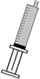

Nubain - Nalbuphine
Amp.
20 mg/2 ml.Conservation dans les toxiques et à l’abri de la lumière.
FAMILLE :
Antalgique opioïde mixte.
DÉLAI D’ACTION :
2-3 minutes IV, 10-15 minutes IM ou SC.
DURÉE D’ACTION :
3-6 heures IV, 4-8 heures IM ou SC.
INCOMPATIBILITÉ PHYSICO-CHIMIQUE :
Diazépam. Prométhazine. Penthotal.
PRÉPARATION ET DILUTION :
NaCl 0,9 %.
Voie d’administration :
IV, SC, IM, IR.
IVD, IR :
20 mg dans 20 ml, soit 1 mg/ml. Administration IVD sur 60 secondes minimum.
2 ml |
18 ml |
20 ml |
||
 |
 |
 | ||
|
|
|
|
POSOLOGIE :
 Adulte : 0,25 mg/kg IVD toutes les 4 heures.
Adulte : 0,25 mg/kg IVD toutes les 4 heures.
 Pédiatrique : IVD : 0,2-0,5 mg/kg IVD toutes les 4 à 6 heures. IR : 0,3 mg/kg.
Pédiatrique : IVD : 0,2-0,5 mg/kg IVD toutes les 4 à 6 heures. IR : 0,3 mg/kg.
EFFETS SECONDAIRES ET SURVEILLANCES :
Monitorage.- Effets de somnolence et de vertiges.
- Effets psychomoteurs indésirables : anxiété, agitation.
- Nausées et vomissements.
- Pas d’effet sur le transit intestinal.